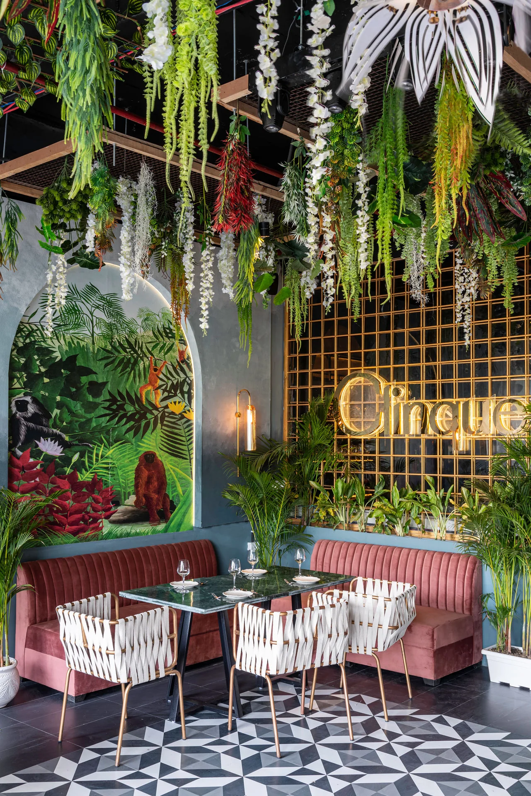

Concept design, planning, built form, facade language, drawing development, and site-responsive spatial strategy.

Services
Urban Mistrii supports projects at different scales and stages, from early spatial thinking to execution-aware design development. Each engagement is shaped around the brief, the site, and the level of involvement the client needs.
Core Services
Concept design, planning, built form, facade language, drawing development, and site-responsive spatial strategy.
Residential, hospitality, workplace, and retail interiors resolved through layouts, finishes, furniture, lighting, and detailing.

Restaurants, bars, cafes, and guest-focused spaces shaped around atmosphere, operational flow, and memorable experience. For a focused brief, see restaurant design in Delhi.

Stores, showrooms, product displays, customer journeys, and branded environments. Explore retail interior design in Delhi.
Workplaces, offices, client-facing spaces, services coordination, and fit-out delivery. Explore commercial interior design in Delhi.

Feasibility, site planning, massing, unit mix, shared spaces, and consultant coordination. Explore group housing architecture in Delhi.
Finish schedules, design intent reviews, vendor coordination, and on-site decisions that help preserve the quality of the original design.

How Engagements Start
The studio can step in at the beginning of a project, at a renovation decision point, or midstream when a project needs stronger design coherence. The best route is to begin with a structured project brief so priorities, scale, and timeline are understood early.
Depending on the scope, services may be delivered as a full design package, a concept-led engagement, or focused advisory support around interiors, planning, or execution.
Engagement Models
For clients who want the studio involved from concept through detailed development, coordination, and design intent on site.
Includes concept design, detailed development, coordination, and design-intent reviews on site. Next step: share the brief. Begin with this model
For early-stage briefs that need spatial clarity, design language, material direction, and a strong framework before full rollout.
Includes the spatial framework, design language, and material direction for the project. Next step: share the brief. Begin with this model
For projects already underway that need sharper layouts, calmer interiors, stronger hospitality logic, or cleaner execution guidance.
Includes layout reviews, interior direction, and execution guidance for a project already underway. Next step: share the brief. Begin with this model
Typical Questions
The studio is based in New Delhi and works with clients across India and abroad, taking on projects worldwide where the brief and execution structure suit.
Residences, farmhouses, restaurants, bars, hospitality spaces, workplaces, retail, commercial interiors, and group housing or development-scale layouts are all within scope.
As early as possible. Early involvement helps shape better plans, cleaner budgets, and fewer downstream compromises.
Yes, through design intent checks, finish alignment, site decisions, and coordination support where that scope is part of the engagement.
Project Brief